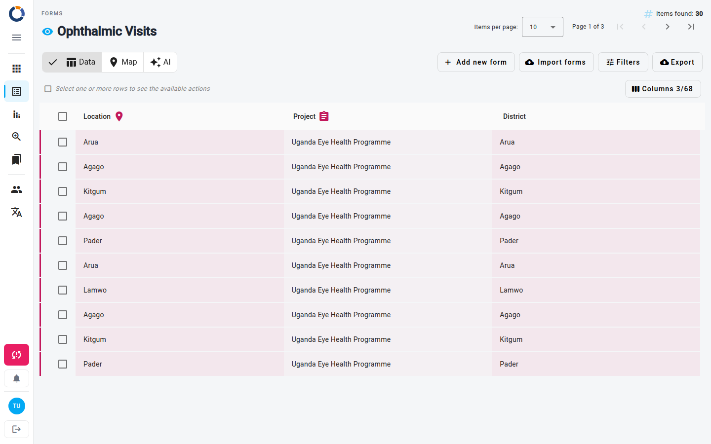
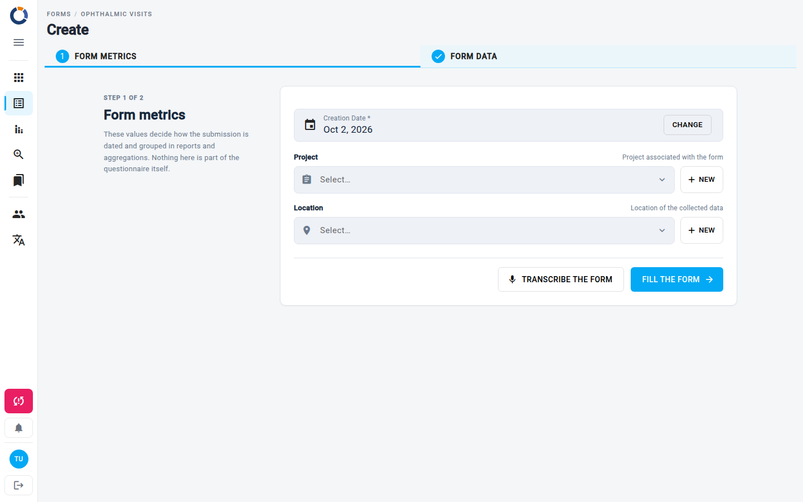

Formularios
La página Formularios es tu punto de partida para la recopilación de datos estructurados en Dino. Desde aquí puedes explorar, crear y gestionar esquemas de formulario, y luego ver y trabajar con los datos recopilados a través de cada formulario.

La vista principal muestra una cuadrícula de tarjetas de esquemas de formulario. Cada tarjeta muestra la etiqueta y el icono del formulario. Una tarjeta marcada con un icono de huella dactilar es única: solo puede existir un dato con ese conjunto exacto de métricas. Al pasar el cursor sobre una tarjeta, aparecen botones de acción:
- Editar esquema de formulario – Modifica la estructura del formulario (campos, validación, métricas).
- Borrar esquema de formulario – Elimina el esquema. Dino se niega si el esquema todavía tiene datos o si un report lo utiliza, y pide confirmación si otros formularios o grupos de usuarios hacen referencia a él.
- Compartir url pública – Obtén un enlace público que permite recibir datos externos.
- Ver mapa – Abre la vista de mapa para los datos con información de posiciones.
- Chatea con tus datos – Haz preguntas sobre tus datos en lenguaje natural usando DataChat.
Tip
Las acciones disponibles en una tarjeta dependen de tus permisos. Es posible que no veas todos los botones.
Si todavía no existe ningún esquema de formulario, la página muestra un mensaje que te invita a agregar uno. Cuando la instancia lo habilita, un campo Filtrar sobre las tarjetas las filtra por nombre.
Crear un esquema de formulario
- Haz clic en el botón flotante + en la esquina inferior derecha de la página.
- Diseña tu formulario en la página Editar esquema de formulario.
Trabajar con datos
Haz clic en la tarjeta de un esquema de formulario para abrir su lista de form. Esta tabla muestra todos los datos recopilados para ese esquema.

Sobre la tabla puedes ver cuántos elementos se encontraron y puedes moverte entre páginas. La barra de herramientas ofrece:
- Agregar nuevo formulario – Crea un nuevo dato.
- Importar formularios – Incorpora datos desde un archivo. Consulta Importar datos.
- Filtros – Filtra la lista por rango de fechas, estado, usuario, métricas y más. Cambia entre filtros Simple y Avanzado, o guarda un filtro predefinido para reutilizarlo más tarde.
- Exportar – Descarga los datos en un archivo. Consulta Exportar.
A la izquierda de la barra de herramientas, el selector Datos / Mapa / IA cambia la vista; consulta Vistas adicionales.
Una fila cuyos datos puedan estar incompletos muestra un icono de advertencia. Las filas con archivos pendientes de sincronización muestran un icono de carga en la nube.
Exportar
Usa el botón Exportar de la barra de herramientas para descargar los datos.

El diálogo Exportar datos te permite elegir:
1) Qué formularios exportar. 1) Elementos de la página. Solo los formularios que aparecen en la página actual de la lista (opción predeterminada). 2) Con filtros activos (N). Todos los formularios que coinciden con los filtros que has aplicado. Cuando no hay ningún filtro activo, esta opción dice Agregar filtros: cierra el diálogo para que puedas configurar algunos. 3) Todos los elementos. Todos los formularios, sin filtro ni paginación. En un formulario grande, esto puede ralentizar el dispositivo. 2) El formato. 1) csv. Cada formulario exportado es una fila y cada campo una columna. 2) xlsx. Lo mismo, en formato Excel. 3) splitted xlsx. Formato Excel, con una hoja por diapositiva. 3) En el menú Campos y formatos: 1) Seleccionar todo Form fields. Exporta todos los campos del formulario. 2) Valores de etiqueta. Para los campos con valores predefinidos (opción única o múltiple), exporta la etiqueta mostrada en lugar del código interno. 3) Formato de valores, una de estas opciones:
- *Por defecto*.
- *Formato Data Analysis*. Las diapositivas repetidas y los campos de opción múltiple se exportan en varias filas, una repetición y una opción por fila; los demás campos se repiten en cada fila. Una columna adicional, *conta*, vale 1 en la primera fila de cada formulario y 0 en las filas adicionales generadas para el mismo formulario, de modo que sumar *conta* cuenta los formularios.
- *Columnas separadas*. Cada opción de un campo de opción múltiple obtiene su propia columna, con 1 o 0.
4) Los campos que exportar. La lista Secciones de la izquierda muestra cada sección con sus campos seleccionados y totales. Para la sección activa puedes buscar un campo, usar Seleccionar todo / Deseleccionar, o marcar campos individuales. El pie de página muestra cuántos campos están seleccionados; haz clic en Exportar para descargar.
Algunas columnas siempre se exportan y no se pueden deseleccionar:
- ID del formulario
- Fecha de creación
- Fecha de actualización
- Datos del usuario DINO (ID y nombre completo)
- Datos de métricas (id, nombre, etc...)
- Estado del formulario (id, nombre, etiqueta, nivel, color), cuando el formulario tiene estados
- Dinoinvalid
Acciones de fila
Pasa el cursor sobre una fila para mostrar los iconos Ver y Editar. Haz clic en una fila para seleccionarla: la barra de acciones sobre la tabla muestra entonces todas las acciones que puedes usar sobre ella (ver, editar, eliminar, imprimir como PDF, descargar como DOCX, imprimir credencial). Las acciones disponibles dependen de tus permisos y de la configuración del formulario.
Crear un nuevo dato
- Abre la lista de form del esquema de formulario que quieras.
- Haz clic en Agregar nuevo formulario en la barra de herramientas.
- Rellena el formulario en blanco y guárdalo. Consulta Editar formulario.

El nuevo dato aparece en la lista.
Operaciones masivas
Selecciona uno o varios datos con las casillas para mostrar las acciones masivas. Puedes eliminar los datos seleccionados o Editarlos juntos, aplicando el mismo valor de campo a todos ellos.
Warning
Eliminar un esquema de formulario o sus datos no se puede deshacer. Ten cuidado al usar las acciones de eliminación.
Vistas adicionales
Cambia de vista con los botones Datos / Mapa / IA a la izquierda de la barra de herramientas de la lista de form, o desde los botones de la tarjeta de un esquema de formulario. Los filtros que hayas aplicado se conservan.
- Mapa – Consulta los datos con coordenadas geográficas en un mapa interactivo. Solo está disponible cuando el esquema recopila posiciones. Más información en Mapa de formularios.
- DataChat (la vista IA) – Consulta los datos de tus formularios en lenguaje natural. Consulta DataChat para más detalles.
Warning
DataChat puede consumir créditos. Comprueba el saldo de créditos de tu cuenta antes de usarlo.